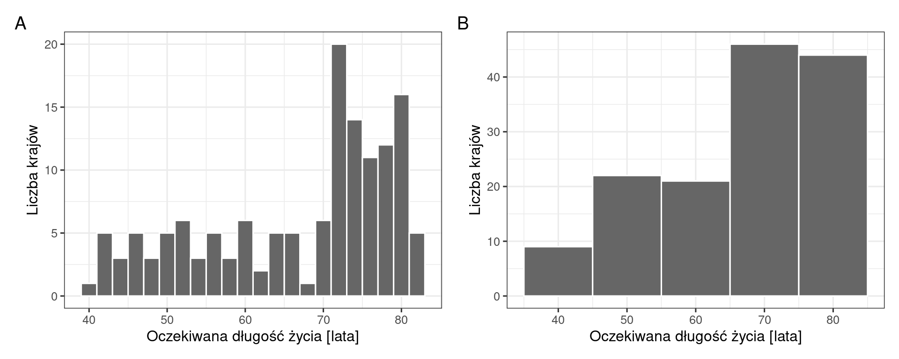
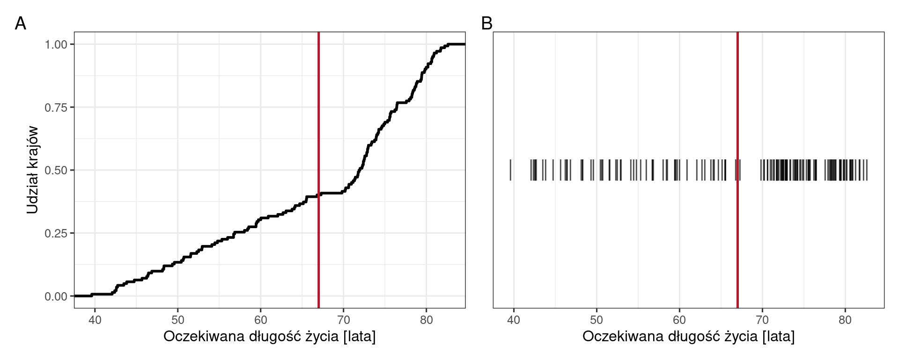
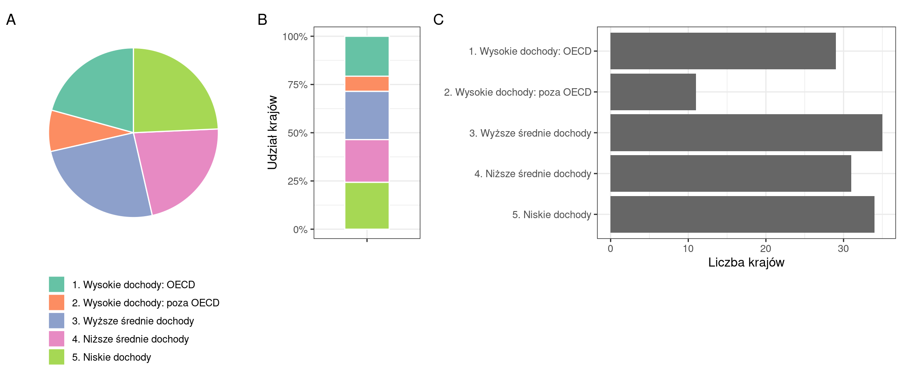

Kod: wczytanie pakietów i danych
library(tidyverse)
library(patchwork)
dane <- read.csv("dane/gapminder_regions.csv", encoding = "UTF-8") |>
mutate(across(where(is.character), as.factor))
dane2007 <- dane |>
filter(year == 2007)Rozdział opisuje dobór wykresu do problemu badawczego. Pytanie badawcze omawia się na kilku wykresach, które przedstawiają te same dane w różny sposób; rozdział pokazuje tę metodę na dwóch pytaniach i zestawia 20 pytań badawczych wraz z przypisanymi im wykresami. Przykłady wykorzystują dane Gapminder z 2007 roku (Sekcja 3.1); kod jest zwinięty nad każdą ryciną.
library(tidyverse)
library(patchwork)
dane <- read.csv("dane/gapminder_regions.csv", encoding = "UTF-8") |>
mutate(across(where(is.character), as.factor))
dane2007 <- dane |>
filter(year == 2007)Dla jednego pytania warto przygotować kilka wykresów i sprawdzić, co pokazuje każdy z nich, zamiast poprzestać na pierwszym.
Problem badawczy jest kategorią ogólną, np. „związek zamożności z długością życia”. Pytanie badawcze jest jego szczegółowym sformułowaniem, na które odpowiada konkretna tabela albo wykres, np. „Czy oczekiwana długość życia zależy od PKB per capita?”. Jeden problem obejmuje zwykle kilka pytań. Zestawienie w Sekcja 17.6 obejmuje siedem problemów badawczych na danych Gapminder, opisanych 20 pytaniami.
Każda wizualizacja odwzorowuje wartości danych na mierzalne cechy grafiki, nazywane estetykami (Sekcja 13.2). Wilke (2019, rozdz. 2) wymienia jako najczęściej stosowane położenie, kształt, wielkość, kolor, grubość linii i rodzaj linii. Położenie, wielkość, kolor i grubość linii mogą przedstawiać dane ciągłe, a kształt i rodzaj linii — zwykle tylko dane dyskretne.
Healy (2026, rozdz. 1) nazywa cechy, którymi przedstawia się wartość, kanałami (ang. channels) i odwołuje się do badań percepcji wykresów (Cleveland i McGill, 1984; Heer i Bostock, 2010). Odbiorca porównuje wartości najdokładniej na podstawie położenia na wspólnej skali, mniej dokładnie na podstawie długości, a jeszcze mniej dokładnie na podstawie kąta i pola powierzchni. Tabela przedstawia te kanały w kolejności podanej przez Healy’ego (2026) za Munzner (2014) dla danych uporządkowanych; przykłady wykresów przypisano na podstawie tych źródeł.
| Kanał (od najskuteczniejszego) | Przykłady wykresów |
|---|---|
| położenie na wspólnej skali | wykres rozrzutu, kropkowy, liniowy, pudełkowy, słupkowy, histogram, dystrybuanta empiryczna |
| położenie na skalach niewyrównanych | wykresy w panelach o oddzielnych osiach |
| długość | wykres słupkowy skumulowany (segmenty powyżej dolnego) |
| kąt | wykres kołowy |
| pole powierzchni | wykres treemap, wykres bąbelkowy |
| kolor: jasność albo nasycenie | heatmapa (wykres kafelkowy), kartogram |
Kanał nie jest typem wykresu: wybór kanału zawęża możliwe wykresy, lecz ich nie wyznacza (Healy, 2026). Na wykresie słupkowym wartość odczytuje się z wysokości słupka względem wspólnej osi, dlatego wykres ten znajduje się w pierwszym wierszu tabeli. Na mapie położenie odpowiada współrzędnym geograficznym, a wartość zmiennej przedstawia kolor obszaru (kartogram) albo wielkość znaku (kartodiagram). Zmienne jakościowe przedstawia się m.in. kolorem i kształtem.
Dla każdego wykresu warto zapisać dwie rzeczy: co pokazuje i czego nie pokazuje. Zestawienie tych zapisów dla kilku wykresów jest podstawą wyboru.
Średnia oczekiwana długość życia 142 krajów w 2007 roku wynosiła 67,0 roku, mediana — 71,9 roku (Sekcja 10.10). Pytanie dotyczy tego, czy wartość przeciętna opisuje jakikolwiek rzeczywisty kraj.
p_2 <- ggplot(dane2007, aes(x = lifeExp)) +
geom_histogram(binwidth = 2, fill = "grey40", colour = "white") +
labs(x = "Oczekiwana długość życia [lata]", y = "Liczba krajów") +
theme_bw(base_size = 12)
p_10 <- ggplot(dane2007, aes(x = lifeExp)) +
geom_histogram(binwidth = 10, fill = "grey40", colour = "white") +
labs(x = "Oczekiwana długość życia [lata]", y = "Liczba krajów") +
theme_bw(base_size = 12)
p_2 + p_10 + plot_annotation(tag_levels = "A")
srednia <- mean(dane2007$lifeExp)
p_ecdf <- ggplot(dane2007, aes(x = lifeExp)) +
stat_ecdf(linewidth = 1) + # dystrybuanta empiryczna
geom_vline(xintercept = srednia, colour = "#b2182b", linewidth = 0.9) +
labs(x = "Oczekiwana długość życia [lata]", y = "Udział krajów") +
theme_bw(base_size = 12)
p_paski <- ggplot(dane2007, aes(x = lifeExp, y = 0)) +
geom_point(shape = "|", size = 6, alpha = 0.7) + # każdy kraj jako pionowa kreska
geom_vline(xintercept = srednia, colour = "#b2182b", linewidth = 0.9) +
scale_y_continuous(breaks = NULL) +
labs(x = "Oczekiwana długość życia [lata]", y = NULL) +
theme_bw(base_size = 12)
p_ecdf + p_paski + plot_annotation(tag_levels = "A")
| Wykres | Co pokazuje | Czego nie pokazuje |
|---|---|---|
| histogram, przedział 2 lata i 10 lat (Rycina 17.1) | przy przedziale 2-letnim dwa skupienia krajów i przerzedzenie między nimi; przy 10-letnim ten sam zbiór wygląda na rozkład z jednym skupieniem | szerokość przedziału jest decyzją autora wykresu — odbiorca widzi jeden obraz i nie wie, że inna szerokość dałaby inny |
| dystrybuanta empiryczna (Rycina 17.2 A) | odczyt dowolnego kwantyla wprost z osi, bez parametru do wyboru; przerzedzenie widać jako odcinek o małym nachyleniu | kształt rozkładu wymaga odczytu nachylenia, co jest trudniejsze w odbiorze |
| wykres paskowy (Rycina 17.2 B) | wszystkie 142 obserwacje bez przetworzenia: przedziały, w których nie ma ani jednego kraju, i położenie średniej wobec nich | liczności w zagęszczeniach — kreski nakładają się na siebie |
Dystrybuantę empiryczną rysuje funkcja stat_ecdf(); jej definicję podaje Sekcja 14.4.
Średnia (67,0 roku) mieści się w przedziale, w którym krajów jest mało: w przedziale 60–70 lat znajduje się 16 ze 142 krajów. Średnia nie opisuje typowego kraju — kraje świata tworzą dwa skupienia.
# liczba krajów w przedziałach dziesięcioletnich (lewy koniec przedziału domknięty)
dane2007 |>
mutate(przedzial = cut(lifeExp, breaks = seq(30, 90, 10), right = FALSE)) |>
group_by(przedzial) |>
summarise(liczba_krajow = n())# A tibble: 6 × 2
przedzial liczba_krajow
<fct> <int>
1 [30,40) 1
2 [40,50) 18
3 [50,60) 24
4 [60,70) 16
5 [70,80) 70
6 [80,90) 13Pytanie dotyczy liczności pięciu grup dochodowych Banku Światowego wśród 140 krajów z przypisaną grupą (2007). Bank Światowy dzieli kraje na grupy według dochodu narodowego brutto na mieszkańca (ang. gross national income per capita).
grupy <- dane2007 |>
filter(income_grp != "") |> # kraje z przypisaną grupą
mutate(grupa = fct_recode(income_grp, # polskie nazwy grup
"1. Wysokie dochody: OECD" = "1. High income: OECD",
"2. Wysokie dochody: poza OECD" = "2. High income: nonOECD",
"3. Wyższe średnie dochody" = "3. Upper middle income",
"4. Niższe średnie dochody" = "4. Lower middle income",
"5. Niskie dochody" = "5. Low income")) |>
group_by(grupa) |>
summarise(n = n()) |>
mutate(udzial = n / sum(n))
p_kolo <- ggplot(grupy, aes(x = "", y = udzial, fill = grupa)) +
geom_col(width = 1, colour = "white") +
coord_polar(theta = "y") +
scale_fill_brewer(palette = "Set2") +
labs(fill = NULL) +
theme_void(base_size = 12) +
theme(legend.position = "bottom", legend.direction = "vertical")
p_skum <- ggplot(grupy, aes(x = "", y = udzial, fill = grupa)) +
geom_col(width = 0.5, colour = "white") +
scale_fill_brewer(palette = "Set2", guide = "none") +
scale_y_continuous(labels = scales::label_percent()) +
labs(x = NULL, y = "Udział krajów") +
theme_bw(base_size = 12)
p_slupki <- ggplot(grupy, aes(x = n, y = fct_rev(grupa))) + # grupy od 1 do 5, licząc od góry
geom_col(fill = "grey40") +
labs(x = "Liczba krajów", y = NULL) +
theme_bw(base_size = 12)
p_kolo + p_skum + p_slupki +
plot_layout(widths = c(1.1, 0.5, 1.4)) +
plot_annotation(tag_levels = "A")
| Wykres | Co pokazuje | Czego nie pokazuje |
|---|---|---|
| wykres kołowy (Rycina 17.3 A) | grupy mają zbliżony udział i żadna nie dominuje | porównania udziałów o podobnej wielkości — 25% i 24,3% są jako kąty nierozróżnialne |
| wykres słupkowy skumulowany (Rycina 17.3 B) | podział całości na jednym słupku, z udziałami odczytywanymi z osi procentowej | od zera zaczyna się tylko dolny segment, więc pozostałe porównuje się trudniej |
| wykres słupkowy (Rycina 17.3 C) | kolejność grup i różnice kilku krajów, odczytywane ze wspólnej osi | tego, że słupki opisują podział jednego zbioru na części |
Pytanie „jak liczne są grupy” obejmuje dwie rzeczy: podział całości i porównanie części. Wykres kołowy i skumulowany pokazują pierwszą, a słupkowy — drugą. Przy pięciu grupach o zbliżonych licznościach (29–35 krajów, z wyjątkiem grupy 2) różnice między grupami odczytuje się na wykresie słupkowym.
Zestawienie obejmuje 20 pytań badawczych w 7 problemach. Dla każdego pytania zestawiono co najmniej trzy wykresy, a w nawiasie podano kanał, którym przedstawiono wartość (Sekcja 17.3). Przy wielu pytaniach kilka wykresów korzysta z tego samego kanału, a różnią się tym, co można z nich odczytać. Ryciny i omówienie dwóch pytań przedstawiają Sekcja 17.4 i Sekcja 17.5, a kolejnych dwunastu pytań — Załącznik D.
| Problem badawczy | Pytanie badawcze | Wykresy |
|---|---|---|
| A. Nierówności poziomu życia i zamożności na świecie | Czy istnieje kraj o typowej oczekiwanej długości życia? | histogram w dwóch szerokościach przedziału (położenie) · dystrybuanta empiryczna (położenie) · wykres paskowy (położenie) |
| A | Czy typowy kraj jest biedniejszy od średniej światowej? | histogram ze średnią i medianą (położenie) · wykres kwantyl-kwantyl (położenie) · wykres pudełkowy ze średnią i medianą (położenie) |
| B. Zróżnicowanie długości życia między regionami i wewnątrz nich | Czy oczekiwana długość życia różni się między kontynentami? | wykres pudełkowy (położenie) · heatmapa kontynent × przedział długości życia (kolor) · słupkowy skumulowany udziałów przedziałów (długość) |
| B | Czy średnia subregionu opisuje oczekiwaną długość życia jego krajów? | wykres słupkowy średnich (położenie) · wykres kropkowy wszystkich krajów (położenie) · nakładające się wykresy gęstości (położenie) · wykres pudełkowy z punktami krajów (położenie) |
| C. Wydłużanie się życia na świecie w latach 1952–2007 | W jakim tempie rosła mediana oczekiwanej długości życia? | wykres liniowy (położenie) · wykres słupkowy mediany (położenie) · wykres słupkowy przyrostów pięcioletnich (położenie) |
| C | W których krajach oczekiwana długość życia obniżyła się? | wykres liniowy wszystkich krajów (położenie) · heatmapa kraj × pięciolecie (kolor) · wykres słupkowy rozbieżny spadków (położenie) |
| C | O ile wydłużyło się życie w subregionach i czy regiony o najniższym poziomie wyjściowym nadrobiły dystans? | wykres hantlowy (położenie) · wykres słupkowy zmiany (położenie) · wykres rozrzutu 1952 wobec 2007 (położenie) |
| C | Czy zróżnicowanie oczekiwanej długości życia między krajami zmalało? | wykres grzbietowy (położenie) · wykres pudełkowy po latach (położenie) · wykres liniowy odchylenia standardowego (położenie) |
| C | Jak przebiegały zmiany oczekiwanej długości życia i PKB per capita w Polsce na tle świata i Europy? | wykres rozrzutu z połączonymi punktami (położenie) · dwa wykresy liniowe (położenie) · słupkowy różnicy wobec mediany świata (położenie) · wykresy wstęgowe na tle świata i Europy (położenie) |
| C | Czy kraje Europy zmieniały się w kolejnych pięcioleciach podobnie? | heatmapa kraj × pięciolecie (kolor) · wykres pudełkowy przyrostów (położenie) · wykres liniowy wybranych krajów na tle pozostałych (położenie) |
| D. Wzrost zamożności krajów w latach 1952–2007 | Czy tempo wzrostu PKB per capita było jednakowe we wszystkich krajach? | histogram tempa (położenie) · wykres kropkowy uporządkowany (położenie) · wykres słupkowy rozbieżny (położenie) |
| E. Związek zamożności z długością życia | Czy oczekiwana długość życia zależy od PKB per capita? | wykres rozrzutu na skali logarytmicznej (położenie) · wykres bąbelkowy (pole powierzchni) · wykres rozrzutu na skali liniowej (położenie) |
| E | W których krajach wysokie PKB per capita nie wiąże się z wysoką oczekiwaną długością życia? | mapa różnicy rang (kolor) · wykres rozrzutu z wyróżnieniem krajów (położenie) · treemap (pole powierzchni, kolor) |
| E | Czy zależność między PKB per capita a oczekiwaną długością życia jest jednakowa we wszystkich grupach dochodowych? | wykres rozrzutu w panelach (położenie) · wykres słupkowy współczynnika Spearmana (położenie) · heatmapa grupa × rok (kolor) |
| E | Które kraje łączą wysokie PKB z długim życiem, a w których te cechy się rozchodzą? | wykres rozrzutu z podziałem na sektory (położenie) · dwie mapy obok siebie (kolor) · mapa dwuzmienna (kolor) · heatmapa liczności sektorów (kolor) |
| F. Podział świata na kraje bogate i biedne | Jak liczne są poszczególne grupy dochodowe? | wykres kołowy (kąt) · wykres słupkowy skumulowany (długość) · wykres słupkowy (położenie) |
| F | Czy rozmieszczenie grup dochodowych jest przestrzennie zróżnicowane? | mapa grup dochodowych (kolor) · kartodiagram (wielkość) · dwa treemapy kontynent → grupa: liczba krajów i liczba ludności (pole powierzchni) |
| F | Czy klasyfikacja gospodarcza krajów pokrywa się z klasyfikacją dochodową? | treemap grupa gospodarcza → grupa dochodowa (pole powierzchni) · heatmapa liczności (kolor) · słupkowy skumulowany udziałów (długość) |
| G. Gdzie mieszka ludność świata, a gdzie wytwarzany jest dochód | Czy udział regionu w ludności świata odpowiada jego udziałowi w gospodarce? | dwa treemapy: ludność i PKB (pole powierzchni) · wykres słupkowy zgrupowany (położenie) · wykres nachyleniowy (położenie) |
| G | Czy udział kontynentów w ludności świata zmienił się w latach 1952–2007? | wykres warstwowy skumulowany (pole powierzchni) · wykres liniowy udziałów (położenie) · wykres słupkowy skumulowany dla 1952 i 2007 (długość) |
Kod wykresów do pozostałych pytań można opracować na podstawie przykładów raportów oraz katalogu typów wykresów (Załącznik A).